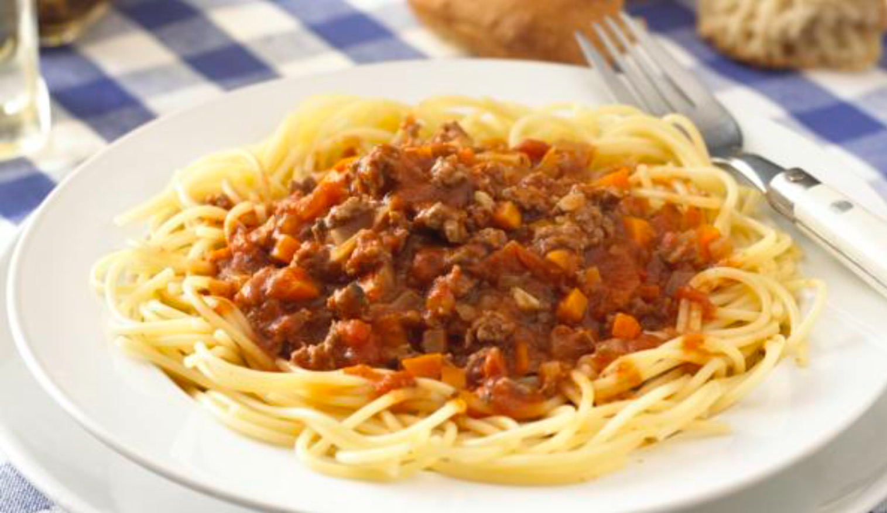

Quick & Easy Spaghetti with Meatballs

Ingredients
- 1 lb. ground beef
- 2 tbsp. water
- ⅓ cup seasoned dry bread crumbs
- 1 egg, beaten
- 1 jar of tomato sauce
- 8 ounces of cooked spaghetti pasta
Directions
- Mix the ground beef, water, bread crumbs and egg. Shape into 12 (2 inch) meatballs.
- Arrange the meatballs in a microwavable baking dish.
- Microwave on HIGH for 5 minutes or until they’re fully cooked.
- Stir the sauce in the dish. Cover and microwave for 3 minutes or until hot.
- Pour over the cooked spaghetti pasta.